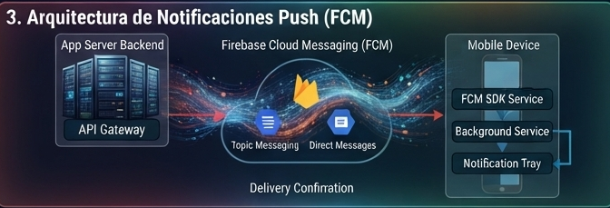

5. Servicios y Notificaciones
Definición
Los servicios y sistemas de notificación permiten que una aplicación móvil ejecute operaciones lógicas de larga duración sin interfaz gráfica y se comunique con el usuario de manera proactiva cuando ocurren eventos relevantes.
Tareas en Segundo Plano (Background Tasks)
Son procesos que se ejecutan fuera del ciclo de vida visual de las actividades (Activities/ViewControllers), tales como sincronización de bases de datos locales con servidores remotos, descargas de archivos pesados o procesamiento de geocercas.
Tratamiento de Notificaciones en Aplicaciones Móviles
- Notificaciones Locales: Programadas y disparadas directamente por el dispositivo (ej. recordatorios de calendario o alarmas).
- Notificaciones Push (Remotas): Enviadas desde servidores en la nube a través de proveedores como Firebase Cloud Messaging (FCM) o Apple Push Notification service (APNs).
Proceso de Implementación
- Proveedores de Contenido (Content Providers): Encapsulan datos y permiten compartirlos de forma segura entre diferentes aplicaciones mediante esquemas URI.
- Tareas en Segundo Plano: Implementación mediante APIs modernas como WorkManager (Android) para garantizar ejecuciones diferidas y fiables.
- Notificaciones: Creación de canales de notificación (Notification Channels) y gestión de permisos de usuario.
Servicios de Cómputo en la Nube Aplicables
Plataformas BaaS (Backend-as-a-Service) como Firebase, AWS Amplify o Microsoft Azure Mobile Apps, que ofrecen autenticación, bases de datos en tiempo real, funciones serverless y pasarelas de mensajería push.
